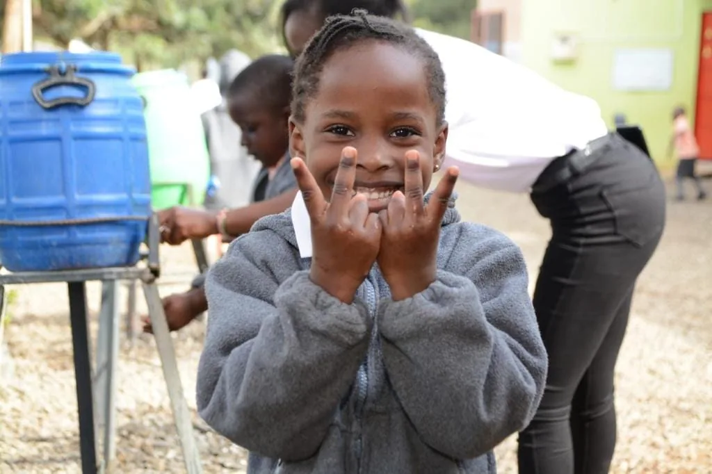
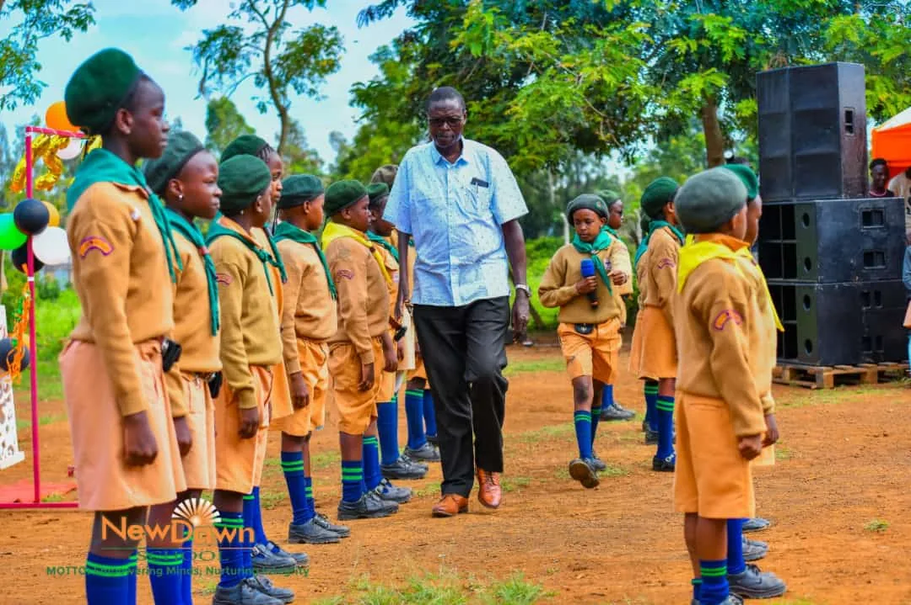
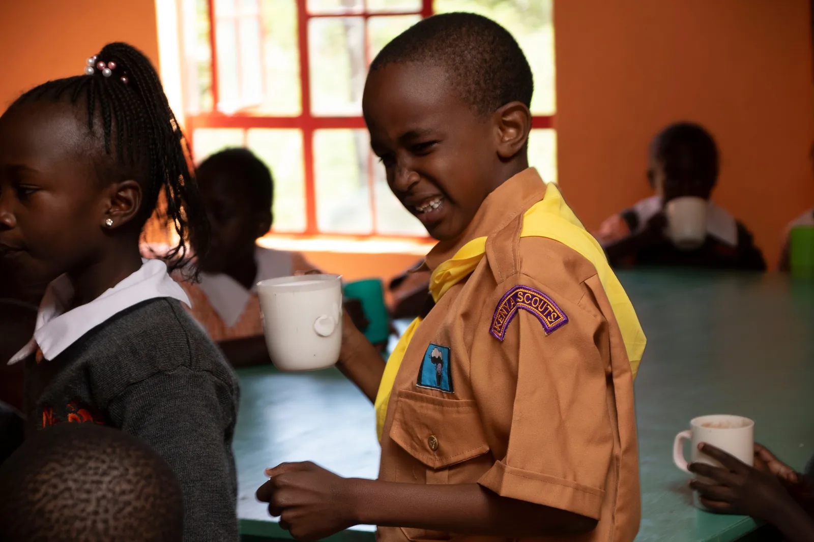
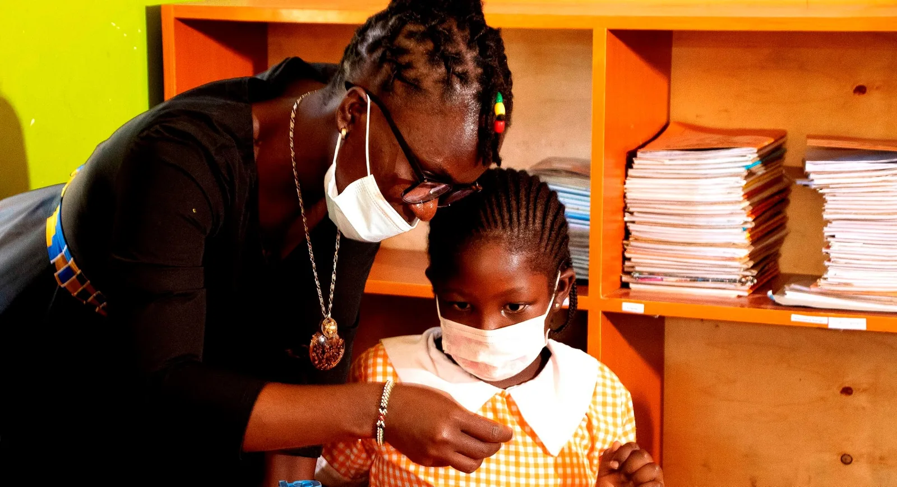
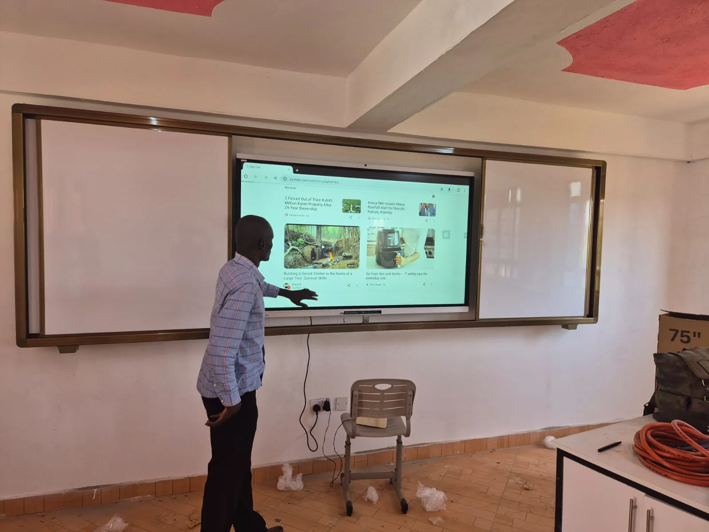
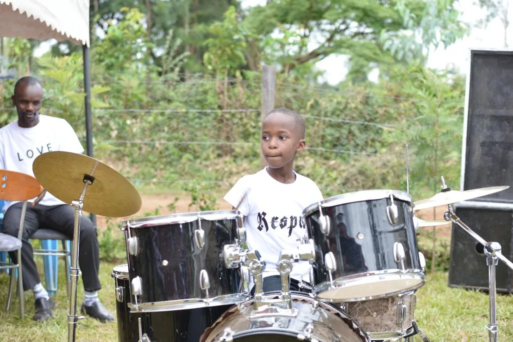
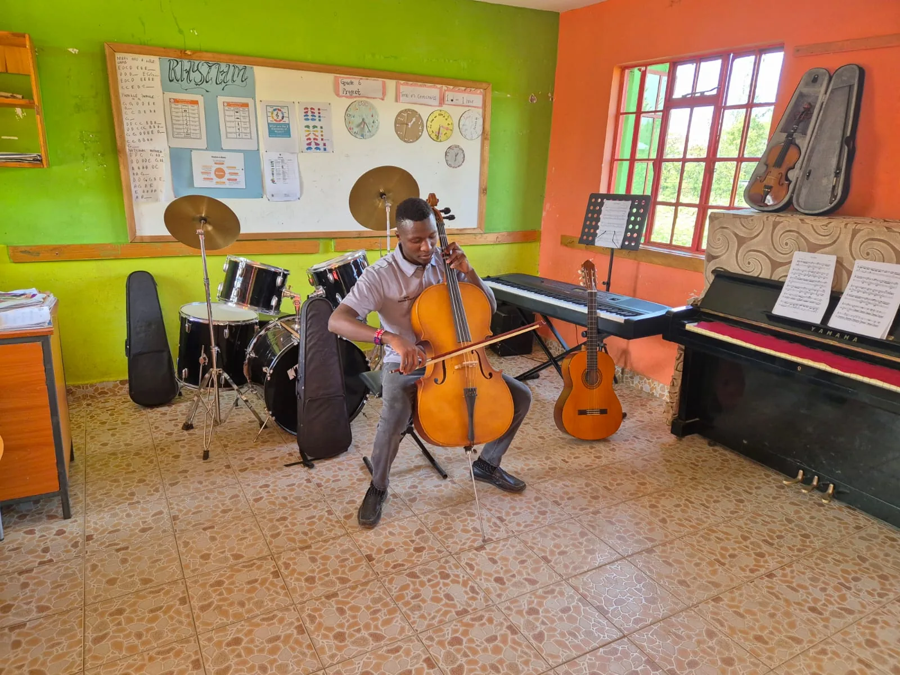

Whole-child learning
Academic foundations meet creativity, movement, language and practical experiences.
NewDawn School · Bondo, Kenya
A caring CBC learning community where curiosity, creativity and character grow together—from playgroup to junior school.
ExploreWelcome to NewDawn
Situated on a spacious two-acre campus along the Bondo-Kisian Highway, NewDawn School serves a culturally diverse community in and around Bondo.
Since 2016, the school has grown into a vibrant learning community offering pre-primary, primary and junior school education through Kenya’s national Competency Based Curriculum.
Explore our learning pathways

Do not do what others do better, do it differently.
Guiding thought in the NewDawn School profileWhy NewDawn
Learning goes beyond the timetable. Our environment is designed to help young people think, create, communicate and grow with confidence.
Academic foundations meet creativity, movement, language and practical experiences.
A two-acre campus offers room for focused learning, play and shared school experiences.
Junior School classrooms use smart boards to support engaging, digitally enabled learning.
Music, reading, debate and language activities give learners more ways to find their voice.
Learning pathways
Our CBC-aligned pathways support learners from their first classroom experiences through the transition into junior school.

A joyful first step built around play, discovery, language and confident social development.
↗
Strong foundations, active learning and enrichment that build capable, curious young learners.
↗
A digitally supported setting that helps learners deepen competencies and prepare for what comes next.
↗Beyond the classroom
NewDawn learners take part in experiences that develop expression, collaboration and confidence alongside academic learning.


Figures are drawn from the NewDawn School Profile 2026.
Life at NewDawn
See the energy
Step into the rhythm of a NewDawn day through highlights from learning, events and activities.
Admissions
Tell us a little about your learner and the school team can guide you through availability, visits and next steps.
Download the 2026 school profileContact the school by phone, WhatsApp or email.
Meet the team and experience the campus.
The school will guide you through the admissions process.
NewDawn’s academic programme is based on Kenya’s national Competency Based Curriculum (CBC), and the school is registered with the Ministry of Education.
The school comprises pre-primary (Playgroup, PP1 and PP2), primary (Grades 1–6) and Junior School, introduced in 2025.
Activities include music, weekly storybook sessions, French for Grades 4–6, spelling bees and debates.
Call or WhatsApp +254 769 924 670, email the school, or use the enquiry form below.
Visit or enquire
NewDawn School is located along the Bondo-Kisian Highway, just outside Bondo town.
Phone / WhatsApp+254 769 924 670 Emailinfo@newdawnschool.sh.ke LocationBondo-Kisian Highway, Bondo